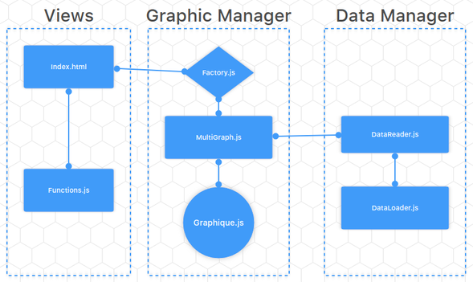

Afin de pouvoir utiliser la bibliothèque chart.js et permettre d'afficher certaines de nos graphiques, veuliez suivre les étapes suivantes:
- Rendez-vous à la page about:config de votre navigateur Firefox.
- Cliquez sur "Je prends le risque".
- Dans la barre de recherche, tapez "modules".
- Trouvez la ligne "dom.moduleScripts.enabled".
- Double-cliquez dessus afin que la booleén prenne la valeur "true".
Tous nos graphiques devraient désormais s'afficher correctement.
Grenoble est une ville entourée de montagne. De part cette particularité géographique, l'air de cette ville connait souvent de forts piques de pollution. En effet, la pollution, notamment aux particules fînes PM10, est prise au piège et n'est pas disperessé par le vent.
Ainsi, la pollution de l'air à Grenoble est un enjeux de santé important et nous avons voulue en savoir plus à ce sujet.
Toutes nos données son tirés de http://www.atmo-auvergnerhonealpes.fr/donnees/telecharger.
Atmo est un site contenant des données publiques sur la pollution de l'air en Auvergne-Rhône-Alpes. Il y est possible d'y visualiser sur une carte la qualité de l'air en temps réel ainsi d'en voir une synthèse annuel. En outre, les données récoltés par Atmo son disponibles au téléchargement.
Sur ce site, nous traitons les données concernant la pollution au particules fînes PM10 à Grenoble entre le 1er janvier 2007 et le 31 décembre 2017.
TODO !!!
Le principe de l'affichage des données par période est de pouvoir déterminer si il y a une certaine rythmicité dans la pollution de l'air. On peut, par exemple, se demander si le fait d'être en week-end n'entrainerait pas une diminusion de la pollution de l'air. En effet, de nombreuses personnes sont en repos le week-end et n'ont donc pas à prendre la voiture pour aller travailler.
On pourrait également se demander si les saisons et le climat qui va avec n'auraient pas à un lien avec la pollution de l'air.
Les données sont affichés sur un tableau à deux dimensions :
L'axe des abscisses indique à quelle jour dans la période le point appartient.
L'axe des ordonnées nous informes sur le niveau de pollution en microgrammes par mètres cubes d'air (microg/m3).
Enfin, la couleur du point nous indique à quelle période celui-ci appartient. En outre, nous avons utilisé une échelle de teinte pour coloriser les périodes. Ainsi, plus la période est loin dans le passé, plus elle sera de couleur claire. Il est toutefois possible d'inverser l'échelle de teinte
Afin de rendre notre site accessible aux daltoniens, nous avons fait en sorte de pouvoir choisir l'échelle de teinte que l'on souhaite utilise.
Afin de pouvoir visualiser au mieux les données, de nombreuses options sont disponibles. Ainsi, il est possible d'avoir, au choix, un affichage en nuage de point ou en spline en cliquant sur le bouton "Changer l'affichage". La durée d'une période est configurable ainsi que la plage de données que l'on souhaite utiliser. De plus, il est possible de choisir la station pour laquelle nous observerons les données. Il est également possible de masquer la légende pour gagner de la place sur le graphique.
Pour finir, une spline (ligne arrondit) représentant la moyenne des données est toujours affichée. C'est cette ligne moyenne qui nous permettra véritablement de faire ressortir une tendance.

L'arquitecture se coupe entre trois roles basiques pour maximizer l'organisation du code et faciliter une croissance future, pour plus types de graphics ou types de données.
Pour réaliser l'affichage en périodes, nous avons utilisé la librairie C3 qui, elle même, se base sur D3.
Pour tous les autres affichages, notamment les radars, nous avons utilisé la librairie Chart.js.
Grâce à l'affichage des données par périodes, nous nous sommes rendus compte que la pollutions baissait le week-end et, plus particulièrement, le dimanche. Si vous souhaitez observer ce phénomène au mieux, nous vous conseillons de commencer par masquer la légende puis de choisir une période de 28 jours pour un interval de données allant du 1er janvier 2007 au 31 décembre 2017. Enfin, après avoir cliqué sur "Changer l'intervale", vous pourrez sélectionner une station autre que "Fontaine les Balmes" pour un résultat plus impréssionnant ("Grenoble Rocade sud" ou "Grenoble Grands Boulevards" par exemple).
Grâce à divers affichages, notemment celui en périodes, nous avons également pu remarquer que Grenoble est moins pollué en été qu'en hiver avec des variations beaucoup moins grande. Cela pourrait, en partie, s'expliquer par le fait qu'il y a moins d'habitants à Grenoble en été qu'en hiver.
En observant les données récoltés sur 10 ans, nous avons également pu nous rendre compte que la pollution en PM10 était plus importe il y a 10 ans que maintenant. Cela pourrait être dû au fait que les voitures modernes émettent moins de ce type de particules. En tous cas, il s'agit là d'un signe encourageans.
A COMPLETER !!!